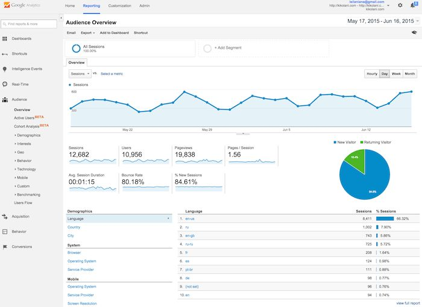

How to track who's visiting your website, how long they spent there, how much cash they parted with.
Create an account, create a new "property". Fill in the details.
You should get a code like:
(function(i,s,o,g,r,a,m){i['GoogleAnalyticsObject']=r;i[r]=i[r]||function(){
(i[r].q=i[r].q||[]).push(arguments)},i[r].l=1*new Date();a=s.createElement(o),
m=s.getElementsByTagName(o)[0];a.async=1;a.src=g;m.parentNode.insertBefore(a,m)
})(window,document,'script','https://www.google-analytics.com/analytics.js','ga');
ga('create', 'UA-69014870-2', 'auto');
ga('send', 'pageview');This page has one! (check out the source)
I put it at the end so that it doesn't slow down the page loading. You should do the same.
Here's an image I stole from a tutorial
Get people to fill out forms. Useful for:
To embed it in your website, you need to change the option under "Send".
<iframe src="https://docs.google.com/forms/d/e/1FAIpQLSc9f2Hu4AbnZQCt4mhaUxV-wrsV-AEbtfi-iJY_5kBNHQGL5g/viewform?embedded=true" width="760" height="500" frameborder="0" marginheight="0" marginwidth="0">Loading...</iframe> The notes cover this in more detail than I can here.
What the browser turns your HTML into on a running page
We manipulated last time using the jQuery $ function.
We used this last session to get HTML and data into our running page. Uses callback functions, because web requests are slow (and asynchronous)
We used AJAX to get things with HTTP. What if we could do more than just GET? HTTP defines other methods.
GET - retrieve, POST - update, PUT - create, and DELETE
A way of representing data that happens to be how JavaScript represents Objects (but you can definitely use it in other languages too!)
It defines a way of using some else's data/functionality.
For example, github let you see a user's repositories by an API. It looks like:
https://api.github.com/users/{username}/repos
For example https://api.github.com/users/robbie-c/repos - this is an example of JSON!
On twitter, go to a tweet, click the dropdown and select embed. It will provide the HTML to add to your page.
#DYK: Dogs aren’t the only animals with pups. Check out pics of 12 different species with pups: https://t.co/vy6j7UgRlC #NationalPuppyDay pic.twitter.com/zKw0gAdbzi
— US Dept of Interior (@Interior) March 23, 2017